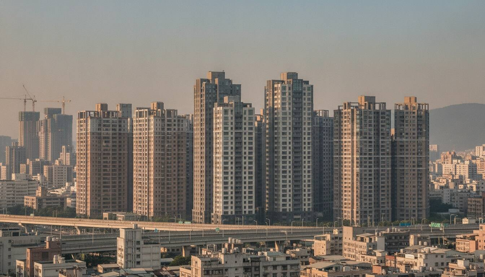

Presale Observation · 內政部實價登錄
雙北 + 台中 + 桃園｜預售案件實價單價追蹤

台北、新北、台中、桃園四縣市的預售屋實價登錄：各行政區預售單價中位數與排名，已排除解約案件，資料來自內政部開放資料，每月 2、12、22 日自動更新。預售登錄的是簽約價，交屋在未來，與成屋行情比較時要注意口徑不同。
已排除「解除契約」案件。樣本 < 30 標「樣本少」。
| 排名／區別▲▼ | 縣市▲▼ | 樣本▲▼ | 單價中位▼ | 總價中位▲▼ | 建坪中位▲▼ |
|---|---|---|---|---|---|
| 1大安區 | 台北市 | 128 | 190.8 | 6,839 | 43.9 |
| 2信義區 | 台北市 | 61 | 150.6 | 5,200 | 43.6 |
| 3松山區 | 台北市 | 96 | 145.0 | 5,616 | 46.7 |
| 4中山區 | 台北市 | 192 | 142.4 | 4,362 | 34.4 |
| 5中正區 | 台北市 | 81 | 137.8 | 3,940 | 30.3 |
| 6南港區 | 台北市 | 91 | 135.3 | 4,267 | 40.6 |
| 7士林區 | 台北市 | 133 | 130.0 | 5,100 | 48.7 |
| 8內湖區 樣本少 | 台北市 | 16 | 121.7 | 3,284 | 34.4 |
| 9大同區 | 台北市 | 148 | 116.3 | 3,114 | 32.2 |
| 10萬華區 | 台北市 | 51 | 113.7 | 2,468 | 21.4 |
| 11北投區 | 台北市 | 296 | 112.5 | 4,478 | 46.5 |
| 12文山區 | 台北市 | 324 | 109.0 | 4,045 | 43.3 |
| 13永和區 | 新北市 | 163 | 92.2 | 2,822 | 34.1 |
| 14新店區 | 新北市 | 146 | 91.7 | 3,057 | 40.9 |
| 15板橋區 | 新北市 | 471 | 87.6 | 3,122 | 40.0 |
| 16中和區 | 新北市 | 383 | 87.1 | 2,579 | 34.3 |
| 17蘆洲區 | 新北市 | 74 | 84.7 | 2,125 | 27.1 |
| 18三重區 | 新北市 | 544 | 83.0 | 2,586 | 35.6 |
| 19汐止區 | 新北市 | 68 | 80.0 | 1,940 | 29.8 |
| 20西屯區 | 台中市 | 282 | 76.6 | 2,918 | 44.1 |
| 21新莊區 | 新北市 | 324 | 73.7 | 2,313 | 36.1 |
| 22西區 | 台中市 | 40 | 72.9 | 2,913 | 46.7 |
| 23土城區 | 新北市 | 160 | 72.1 | 1,976 | 34.4 |
| 24南屯區 | 台中市 | 361 | 69.1 | 2,670 | 49.5 |
| 25北區 | 台中市 | 37 | 64.5 | 2,777 | 50.6 |
| 26林口區 | 新北市 | 264 | 63.3 | 2,044 | 35.8 |
| 27泰山區 | 新北市 | 151 | 60.5 | 2,311 | 43.9 |
| 28北屯區 | 台中市 | 380 | 56.9 | 1,974 | 42.0 |
| 29五股區 | 新北市 | 36 | 54.3 | 1,396 | 29.7 |
| 30三峽區 | 新北市 | 49 | 53.3 | 1,700 | 36.6 |
| 31樹林區 樣本少 | 新北市 | 24 | 53.1 | 1,750 | 36.1 |
| 32桃園區 | 桃園市 | 475 | 52.9 | 1,825 | 40.0 |
| 33南區 | 台中市 | 103 | 52.3 | 1,928 | 43.5 |
| 34大雅區 樣本少 | 台中市 | 17 | 52.1 | 1,247 | 30.8 |
| 35大里區 樣本少 | 台中市 | 16 | 51.8 | 1,668 | 40.7 |
| 36龜山區 | 桃園市 | 259 | 50.2 | 1,464 | 31.5 |
| 37東區 樣本少 | 台中市 | 15 | 50.0 | 1,103 | 27.5 |
| 38鶯歌區 | 新北市 | 169 | 49.7 | 1,548 | 34.4 |
| 39中區 樣本少 | 台中市 | 26 | 49.3 | 1,120 | 27.6 |
| 40中壢區 | 桃園市 | 873 | 47.5 | 1,730 | 39.0 |
| 41烏日區 | 台中市 | 99 | 47.1 | 1,572 | 38.2 |
| 42淡水區 | 新北市 | 240 | 43.8 | 1,566 | 41.4 |
| 43豐原區 | 台中市 | 123 | 41.5 | 1,670 | 47.4 |
| 44八德區 | 桃園市 | 143 | 41.4 | 1,295 | 37.8 |
| 45蘆竹區 | 桃園市 | 182 | 41.3 | 1,476 | 38.6 |
| 46太平區 | 台中市 | 126 | 41.3 | 1,244 | 42.1 |
| 47潭子區 樣本少 | 台中市 | 20 | 41.2 | 1,715 | 44.3 |
| 48八里區 樣本少 | 新北市 | 8 | 39.4 | 1,553 | 42.7 |
| 49大園區 | 桃園市 | 349 | 38.1 | 1,005 | 31.0 |
| 50神岡區 樣本少 | 台中市 | 5 | 38.0 | 1,410 | 45.8 |
| 51大肚區 樣本少 | 台中市 | 5 | 36.7 | 1,195 | 37.9 |
| 52石岡區 樣本少 | 台中市 | 6 | 34.8 | 1,448 | 41.5 |
| 53龍潭區 | 桃園市 | 110 | 33.6 | 1,272 | 41.2 |
| 54外埔區 樣本少 | 台中市 | 9 | 32.9 | 1,126 | 37.2 |
| 55平鎮區 | 桃園市 | 182 | 32.5 | 1,078 | 39.7 |
| 56沙鹿區 | 台中市 | 73 | 31.8 | 1,235 | 41.6 |
| 57后里區 | 台中市 | 41 | 31.7 | 878 | 29.4 |
| 58楊梅區 | 桃園市 | 223 | 29.8 | 1,083 | 38.6 |
| 59大溪區 | 桃園市 | 84 | 29.8 | 942 | 34.2 |
| 60大甲區 樣本少 | 台中市 | 13 | 29.8 | 1,250 | 45.3 |
| 61龍井區 樣本少 | 台中市 | 19 | 29.2 | 1,109 | 46.4 |
| 62霧峰區 樣本少 | 台中市 | 9 | 28.9 | 1,013 | 37.2 |
| 63清水區 樣本少 | 台中市 | 23 | 28.8 | 1,380 | 51.3 |
| 64東勢區 樣本少 | 台中市 | 2 | 28.0 | 1,408 | 50.3 |
| 65觀音區 | 桃園市 | 117 | 27.6 | 790 | 32.6 |
| 66金山區 樣本少 | 新北市 | 3 | 27.4 | 1,168 | 45.7 |
| 67新屋區 | 桃園市 | 34 | 26.4 | 926 | 34.1 |
| 68梧棲區 | 台中市 | 73 | 26.0 | 1,139 | 47.2 |
預售屋自 2021 年 7 月起納入即時申報，建案簽約後 30 日內就要登錄，統計的是「簽約價」；成屋登錄的則是所有權移轉時點的成交價，兩者時間基準不同。
預售價格反映新建案的營建成本、公設規劃與未來交屋時點的預期，付款結構也與成屋不同；直接相減會高估價差，比較時應以同區段、同類型產品為基準。
可以作為同區新案的行情參考，但各建案的基地條件、樓層、面向與附帶項目差異很大，本頁資料僅供市場觀察參考，非投資建議。